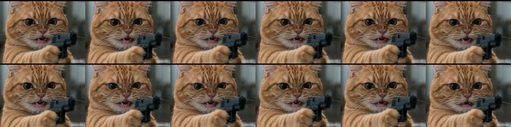
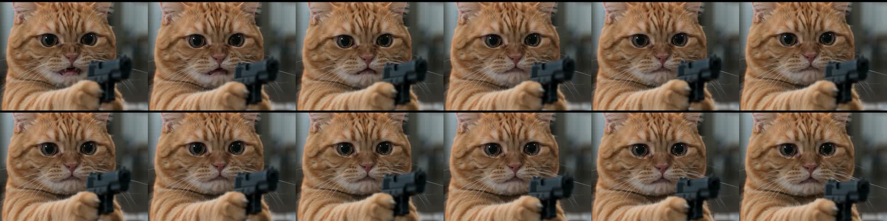
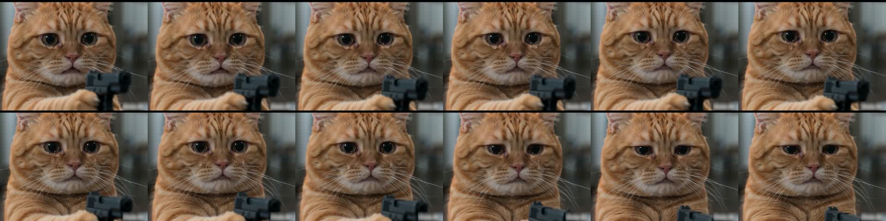
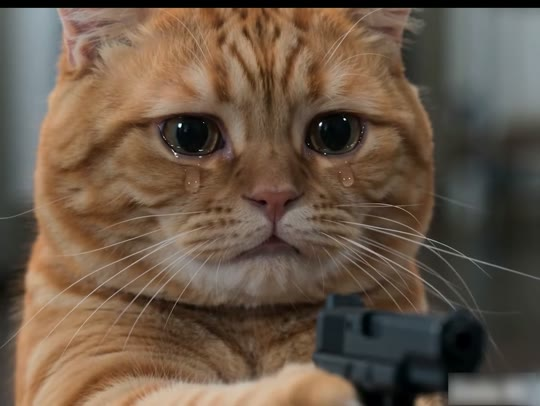
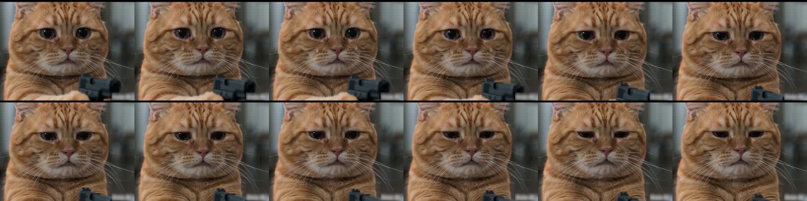
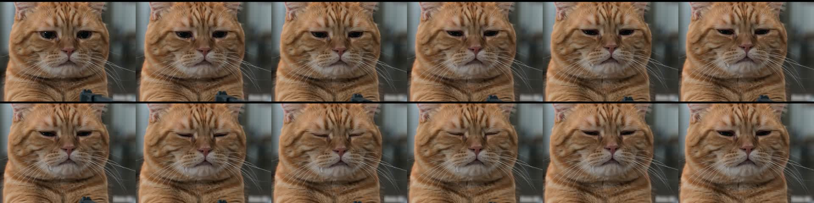
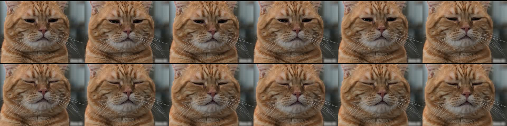
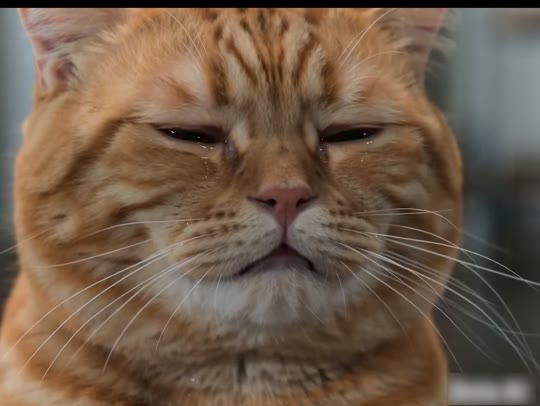
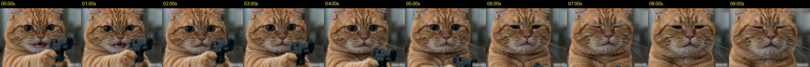

치즈냥이 카메라(=나를 버린 전 애인)에게 총을 겨누고 으르렁대다가, 눈물이 터져 결국 총을 내리고 눈을 질끈 감는 10초 단일 컷 감정 연기.
| 화면 비율/해상도 | 4:3 (landscape) — NOT 9:16 · 1440x1080 (VP9, 실제 영상 영역 1440x1060 + 상단 20px 검은 띠) · 23.976fps |
|---|---|
| 화면 방향 트릭 | 회전 트릭 없음. 대신 '4:3 가로 영상 그대로 업로드'가 핵심 선택. 릴스 플레이어(9:16)에서는 영상이 가로 폭 1080에 맞춰 1080x810 블록으로 화면 세로 중앙에 놓이고 위아래는 검은 레터박스(각 약 555px)로 표시됨 — 자르지 않음(추정: IG는 비 9:16 릴스를 fit 표시). 이 선택의 이유: ① 9:16로 중앙 크롭(608x1080)하면 총(x60-90%)이 잘려 스토리가 무너짐, ② 캡션·좋아요·계정명 UI가 검은 띠 위에 얹혀 고양이 얼굴을 가리지 않음, ③ '영화 스틸' 같은 가로 화면이 밈 짤 느낌을 줌. 프로필 그리드(3:4 썸네일)에서는 가운데 얼굴만 잘려 보이므로 썸네일로도 안전. 상단 20px 검은 띠는 생성기 출력/재인코딩 시 생긴 크롭 잔재로 추정(의도 연출 아님). |
| 워터마크 | 생성기 워터마크를 가린 불투명 블러 박스: 우하단 x≈83-99%, y≈92-99.5%(약 235x85px), 0-10s 전 구간 고정. 채널 워터마크·자막 없음. |
| 화면 문구/자막 | 없음 (캡션: 'Kitty after heartbreak' + #cat #orangecat #orangecatsofinstagram #ai — 게시글 캡션일 뿐 화면 텍스트 아님) |
| 원본 캡션 | Kitty after heartbreak #cat #orangecat #orangecatsofinstagram #ai |
첫 프레임부터 귀여운 치즈냥이 이빨을 드러내며 '나(시청자)'에게 권총을 겨눔 — 귀여움×위협의 부조화가 0.0초에 스크롤을 멈추게 함. 캡션 'after heartbreak'가 시청자를 '버린 전 애인' 역할로 끌어들임.
| Setup 0.00-1.33s | 분노한 고양이가 총을 겨눔(복수하러 옴) |
|---|---|
| Inciting 1.33-2.20s | 입이 닫히며 분노가 무너짐 |
| Escalation 2.20-4.60s | 애원하는 큰 눈, 눈물이 차오름 |
| Climax 4.60-6.30s | 눈물이 흐르고 총을 내림 — 사랑해서 못 쏨 |
| Payoff 6.30-10.01s | 눈을 꼭 감고 울음을 삼킴 — 체념 |
| Loop 10.01→0.00s | 다시 분노 스날로 점프 — '분노↔슬픔' 무한 반복이 이별 감정 그 자체 |
'who hurt him', '나 이 고양이야', 전 애인 태그, '마지막에 눈 감는 거 ㅠㅠ' 같은 댓글 유도 — 누가 이 고양이를 울렸는지 묻게 만드는 구조(2,675 댓글).
시각적 매칭 루프가 아님. 끝(눈 감은 슬픔)→처음(이빨 드러낸 분노)의 극대비 점프가 '분노와 슬픔을 오가는 이별 후 감정 사이클'처럼 읽혀 반복 시청을 정당화함. 음악도 곡 중간을 자른 것이라 반복 시 이음새가 크게 튀지 않음.
| Oner / single take | 컷 없는 원테이크 @ 0.00-10.01s |
|---|---|
| Slow push-in | 아주 느린 전진 줌(약 10%) @ 0.00-10.01s |
| Letterbox (4:3 in 9:16) | 가로 영상 위아래 검은 띠 @ 전 구간(플랫폼 표시) |
| Direct address / breaking the 4th wall | 카메라 정면 응시로 시청자에게 말 걸기 @ 전 구간 |
| Emotional reversal | 감정 반전 @ 1.3-2.2s, 5.0-6.3s |
| Hard-in / hard-out music edit | 곡 중간에서 잘라 시작·끝 @ 0.1s, 10.01s |
| Hard-cut loop | 끝→처음 대비 루프 @ 10.01→0.00s |
| Watermark blur patch | 워터마크 블러 가림 @ 우하단, 전 구간 |
[character_sheet_en] adult male orange ginger tabby cat, chubby British-Shorthair-type build with a very round broad head, full heavy jowly cheeks, small rounded ears set wide apart (pale pink inner ear with fine white ear tufts), dense short plush fur, deep copper-orange mackerel tabby stripes on a lighter apricot base, bold 'M' stripes on the forehead, cream-white muzzle, chin and chest ruff, long bright white whiskers, small pale dusty-pink nose, large round amber-hazel eyes with big glossy dilated black pupils and a soft white catchlight at upper-left, no collar, no clothing, photorealistic real cat (not cartoon) [wardrobe_props_en] matte black compact polymer-frame semi-automatic pistol (Glock-style, plain, no markings), held in the cat's left front paw (appears on the right side of frame), paw wrapped around the grip, muzzle pointed straight at the lens; no other props, no clothing or accessories on the cat [environment_en] indoor apartment kitchen/living room in daylight, background ~2-3 m behind the cat and completely out of focus: cool grey-teal walls, vertical pale window/blind shapes on the right, dark cabinet shapes on the left, no readable objects [lighting_en] soft overcast window daylight from camera-left front (key), gentle fill from the right, no hard shadows, specular catchlight upper-left in both eyes, fur rim slightly glowing warm [color_grade_en] teal-and-orange split: warm saturated orange fur against desaturated cool grey-teal background, medium contrast, lifted blacks slightly, mean luma mid (≈92/255), natural skin-like warmth, no film grain, clean 24fps cinematic look [camera_lens_en] 85mm-equivalent portrait lens at f/1.8, tight close-up at the cat's eye level, camera 40-50 cm from the face, shallow depth of field (eyes and nose sharp, pistol muzzle slightly soft, background fully bokeh), locked-off tripod with a very slow 10% push-in over 10 seconds [realism_style_en] photoreal live-action movie still, real cat anatomy and fur, emotional human-like facial acting (tears, pout, quivering chin) rendered on realistic cat features, 24fps motion, no stylization [negative_prompt_en] cartoon, 3D render look, anime, extra paws, extra fingers, human hands, human fingers on the gun, deformed paws, two guns, gun changing shape, gun firing, muzzle flash, smoke, blood, text, subtitles, logo, watermark, collar, clothes, morphing face, fur color change, eye color change, jump cut, camera shake, fast zoom, cross-eyed, open mouth after 2.5s
프레임 위 노란 3분할 선은 오른쪽 아래 버튼으로 켜고 끌 수 있어요. 각 프롬프트는 [복사] 버튼으로 바로 복사.

x_dense_00
x_dense_02
x_dense_04
s01_mid_05.01
x_gunlower_5.00
x_dense_06
x_dense_08
s01_out_09.94| 카메라 움직임 | 삼각대 고정(광류 0.30px/f) + 10초 동안 약 10% 아주 느린 푸시인(얼굴 폭 프레임 74%→81%). 흔들림·줌펀치 없음. 컷 없음(단일 10초 생성 클립). |
|---|---|
| 화면 구성(구도) | 0s: 얼굴 중심 x≈47%, y≈35%, 눈높이 y≈33%(상단 1/3선 바로 위), 귀는 상단 테두리에 걸려 잘림(헤드룸 0%), 얼굴 폭 프레임의 약 74%, 몸은 하단 밖으로 이어짐(피사체 높이 >100%). 총: 총구 x≈83% y≈50%, 앞발 x≈60% y≈80% — 우하단 3분할 교차점 부근. 수평선 없음(배경 보케). 9.94s: 얼굴 중심 x≈48%, y≈40%, 얼굴 폭 약 81%, 총은 프레임 밖. 상단 20px(1.9%) 검은 띠가 전 구간 존재. |
| 동물 행동/연기 | 0.00-1.33: 분노 스날(snarl) — 입 벌려 송곳니 노출, 눈 크게 부릅뜸, 미간 찌푸림, 총구는 렌즈 정면 조준(총구 x≈83%, y≈50%) / 1.33-2.20: 입이 서서히 닫힘 — 분노가 꺾이는 순간(감정 전환점 #1) / 2.20-3.60: 입 꾹 다문 삐죽입, 눈이 커지며 촉촉해짐('장화 신은 고양이' 눈), 미간 가운데가 올라감 / 3.60-4.60: 아래 눈꺼풀에 눈물 고임, 총은 여전히 조준 / 4.60-5.20: 양 볼로 눈물 한 줄기씩 흘러내림(5.01s 프레임에서 확인) / 5.00-6.30: 총을 천천히 내림 — 총구가 y≈50%→프레임 아래로 사라짐(6.3s경 완전히 퇴장), 눈꺼풀 반쯤 내려감, 고개 살짝 숙임 / 6.30-8.00: 눈을 가늘게 뜨고 입술 꽉 다묾, 코 주름, 턱 떨림 — 참는 울음 / 8.00-10.01: 눈을 꼭 감고 흐느낌을 참음, 미세한 머리 떨림, 마지막 프레임 눈 거의 감긴 상태로 끝 |
| 배경 | 실내(주방/거실 추정) 완전 아웃포커스. 좌측 어두운 수납장 형태, 우측 밝은 회청색 창/블라인드 세로 형태. 읽히는 사물 없음. |
| 화면 문구/자막 | 없음 (우하단 x83-99%, y92-99.5%에 생성기 워터마크를 가린 블러 박스만 존재) |
| 다음 컷 전환 | Hard end (no transition) → platform auto-loop — 전환 없음. 10.01s에서 눈 감은 얼굴로 하드 엔드 → 릴스 자동 반복 시 0.00s 분노 스날로 즉시 점프(감정 극대비 루프). 페이드·딥 없음. |
| BGM 상태 | 0.0s부터 곡 중간을 잘라 바로 시작(첫 100ms -31.8dB → 0.1s부터 -17dB대 유지). 서정적 보컬 멜로디(추정)+지속 화음 패드+저음이 10초 내내 일정 레벨, 끝은 페이드 없이 하드컷. |
Photorealistic cinematic close-up still, 4:3 landscape (1440x1080). An adult male orange ginger tabby cat, chubby British-Shorthair-type build with a very round broad head, full heavy jowly cheeks, small rounded ears set wide apart (pale pink inner ear with fine white ear tufts), dense short plush fur, deep copper-orange mackerel tabby stripes on a lighter apricot base, bold 'M' stripes on the forehead, cream-white muzzle, chin and chest ruff, long bright white whiskers, small pale dusty-pink nose, large round amber-hazel eyes with big glossy dilated black pupils and a soft white catchlight at upper-left, no collar, no clothing, photorealistic real cat (not cartoon). The cat faces the camera straight-on at eye level, face centered at x 47%, y 35%, eyes on a line at 33% of frame height, rounded ears touching and slightly cropped by the top edge, face filling about 74% of frame width, body continuing out of the bottom edge. Expression: furious snarl — mouth open, upper lip pulled back showing small white fangs and pink tongue, eyes wide and glaring, brows furrowed. The cat holds a matte black compact polymer-frame semi-automatic pistol (Glock-style, plain, no markings), held in the cat's left front paw (appears on the right side of frame), paw wrapped around the grip, muzzle pointed straight at the lens; the pistol occupies the right-center of frame, muzzle at x 83%, y 50%, paw at x 60%, y 80%. Background: indoor apartment kitchen/living room in daylight, background ~2-3 m behind the cat and completely out of focus: cool grey-teal walls, vertical pale window/blind shapes on the right, dark cabinet shapes on the left, no readable objects. Lighting: soft overcast window daylight from camera-left front (key), gentle fill from the right, no hard shadows, specular catchlight upper-left in both eyes, fur rim slightly glowing warm. Grade: teal-and-orange split: warm saturated orange fur against desaturated cool grey-teal background, medium contrast, lifted blacks slightly, mean luma mid (≈92/255), natural skin-like warmth, no film grain, clean 24fps cinematic look. Lens: 85mm equivalent, f/1.8, shallow depth of field, eyes and nose tack sharp, background creamy bokeh. Movie-still realism, detailed individual fur strands and whiskers, no text, no watermark.
Same cat, same lighting and background, framed ~10% tighter (face fills 81% of frame width, face center x 48%, y 40%): eyes squeezed almost fully shut with wet tear streaks on both cheeks, lips pressed tight, chin tucked slightly, the pistol no longer visible (lowered out of frame). 4:3, 85mm, f/1.8, photorealistic.
Single continuous 10-second shot, locked-off tripod with a very slow, smooth 10% push-in toward the cat's face over the full 10 seconds. The orange tabby cat keeps aiming the black pistol straight at the lens and performs an emotional arc: 0-1.3s furious snarl with bared fangs and glaring eyes; 1.3-2.2s the mouth slowly closes and the anger drains away; 2.2-3.6s lips pressed into a trembling pout, eyes grow huge, glossy and pleading, inner brows rise; 3.6-5.2s tears well up on the lower eyelids and one tear rolls down each cheek; 5.0-6.3s the cat slowly lowers the pistol until it drops out of the bottom of frame, eyelids half close, head bows slightly; 6.3-10s the cat squints and then squeezes its eyes shut, lips tight, chin quivering, holding back sobs with a tiny head tremble. Subtle realistic breathing, whiskers twitch, no blinking flicker. Keep the same cat identity, fur pattern, eye color, lighting and background for the entire shot. The pistol never fires, never changes shape, and there is only one pistol. No cuts, no camera shake, no zoom punch, no text.
cartoon, 3D render look, anime, extra paws, extra fingers, human hands, human fingers on the gun, deformed paws, two guns, gun changing shape, gun firing, muzzle flash, smoke, blood, text, subtitles, logo, watermark, collar, clothes, morphing face, fur color change, eye color change, jump cut, camera shake, fast zoom, cross-eyed, open mouth after 2.5s
10초 1회 생성(원본도 컷 없는 단일 10초 생성). 시작 프레임 = image_prompt로 만든 4:3 1440x1080 이미지. Kling은 first+last frame 모드로 end_frame 이미지까지 넣으면 '총이 프레임 밖으로 내려감'이 확실해짐. 10초가 불안정하면 5초+5초 2분할(1: 0-5s 스날→눈물, 2: 5-10s 총 내림→눈 감기; 1번 마지막 프레임을 2번 시작 프레임으로) 후 연결. 원본은 23.976fps — 24fps로 뽑을 것. 같은 시드로 3~4개 뽑아 눈물 타이밍이 4.6~5.2s에 맞는 것을 선택. ⚠️ 'gun pointed at camera'는 일부 모델(veo/sora)에서 거절될 수 있음 → 'black toy pistol' 로 표현하면 통과율↑.
no xfade; hard end. (loop is done by the Reels player)
single clip on track 0 from 0s to 10.01s, no transition; composition duration = 10.01s
Photorealistic cinematic macro close-up still, 4:3 landscape (1440x1080). A baby golden (Syrian) hamster, round fluffy body, warm golden-apricot fur on the back and cheeks with a cream-white belly, chest and muzzle, puffed full cheek pouches, small rounded translucent pink ears, tiny pink nose with long fine white whiskers, unusually large glossy black round eyes with a soft white catchlight at upper-left, tiny pink front paws with delicate fingers, photorealistic real hamster (not cartoon). The hamster faces the camera straight-on at eye level, face centered at x 47%, y 38%, eyes on a line at 35% of frame height, ears touching the top edge, face and puffed cheeks filling about 75% of frame width, body continuing out of the bottom edge. Expression: furious snarl — mouth open showing its two long yellow-white front incisors, whiskers flared, eyes glaring, fur on the brow bunched into a frown. The hamster holds a tiny matte black compact semi-automatic pistol scaled down to fit a hamster (about the size of the hamster's head), gripped with both tiny pink front paws, muzzle pointed straight at the lens; the pistol sits right-center of frame, muzzle at x 80%, y 55%, paws at x 60%, y 80%. Background: indoor apartment kitchen/living room in daylight, background ~2-3 m behind the cat and completely out of focus: cool grey-teal walls, vertical pale window/blind shapes on the right, dark cabinet shapes on the left, no readable objects. Lighting: soft overcast window daylight from camera-left front (key), gentle fill from the right, no hard shadows, specular catchlight upper-left in both eyes, fur rim slightly glowing warm. Grade: teal-and-orange split: warm saturated orange fur against desaturated cool grey-teal background, medium contrast, lifted blacks slightly, mean luma mid (≈92/255), natural skin-like warmth, no film grain, clean 24fps cinematic look. Lens: 100mm macro equivalent at f/2.2, shallow depth of field, eyes and nose tack sharp, background creamy bokeh. Detailed individual fur, no text, no watermark.
Single continuous 10-second macro shot, locked-off with a very slow 10% push-in. The baby golden hamster keeps the tiny black pistol aimed at the lens: 0-1.3s furious snarl with bared incisors; 1.3-2.2s mouth closes, anger drains; 2.2-3.6s cheeks puff, lips tremble into a pout, the huge glossy black eyes become watery and pleading; 3.6-5.2s tears well up and one tear rolls down each fluffy cheek; 5.0-6.3s the hamster slowly lowers the pistol out of the bottom of the frame, head drooping; 6.3-10s eyes squint then squeeze shut, nose twitching, tiny body trembling as it holds back sobs. Same hamster identity, fur and lighting throughout; one pistol that never fires or changes shape; no cuts, no shake, no text.
햄스터는 원래 눈이 작고 검은 구슬 형태 → 감정 전달을 위해 'unusually large glossy black eyes' 필수. 흰자가 없으니 '미간 털 찌푸림/볼 떨림/코 씰룩'으로 감정을 대체. 총은 머리 크기로 축소해야 비율이 귀여움. 이빨은 송곳니가 아니라 앞니 2개. 렌즈는 85mm→100mm 매크로 느낌으로 변경.
| sub_beats |
|
|---|
추정: 느리고 서정적인 감성 발라드/R&B 계열 곡의 한 구간. 스펙트로그램상 1.0-1.5kHz 대역에 음정이 미끄러지는 보컬형 멜로디 곡선(0.4s, 1.8s, 5.6s, 7.8s, 8.9s)과 지속되는 화음(패드/현/피아노 서스테인), 20-200Hz 저음이 10초 내내 깔림. 평균 -17.5dB, 피크 -13.7dB(9.1s), 무음 0%. 전체 곡 템포는 약 64-65BPM 느낌(분석기 129BPM은 더블타임 검출로 추정). 효과음(총 장전·울음소리 등)은 확인되지 않음. 음성 전사 불가라 가사 확인 못함.
slow emotional soul R&B ballad, 65 BPM, heartbroken mood, soulful solo vocal melody with long melismatic slides (wordless 'ooh' is fine), warm sustained electric piano and soft string pad chords in a minor key, deep round sub bass, soft laid-back kick on beats 1 and 3, intimate, cinematic, bittersweet, no drops, steady level, start mid-phrase
| 0.0s | (optional, NOT in original) soft pistol slide rack · -14 dB 검색어: pistol slide rack close 생성: a single quiet close-mic pistol slide being racked indoors, short, dry |
|---|---|
| 4.8s | (optional, NOT in original) tiny sad cat whimper · -18 dB 검색어: cat whimper sad soft 생성: a very soft, short, sad kitten whimper, close mic, indoor |
원본은 음악 단독(추정). 음악을 -14 LUFS 정도로 평탄하게, 페이드 없이 0.0s 하드 인/10.01s 하드 아웃. 옵션 효과음을 넣을 경우 음악을 3dB 덕킹하되 원본 재현이 목적이면 효과음은 넣지 말 것.
기본 교체 동물: baby golden hamster · 대안: baby raccoon kit (grey-black masked face, dexterous hand-like paws that grip the pistol naturally, big dark eyes), red panda cub (rusty-red fur, white facial markings, round face, holds objects with front paws, expressive tear-streak-like markings)
Character reference turnaround sheet, photorealistic, neutral grey studio background, soft even daylight: baby golden (Syrian) hamster, round fluffy body, warm golden-apricot fur on the back and cheeks with a cream-white belly, chest and muzzle, puffed full cheek pouches, small rounded translucent pink ears, tiny pink nose with long fine white whiskers, unusually large glossy black round eyes with a soft white catchlight at upper-left, tiny pink front paws with delicate fingers, photorealistic real hamster (not cartoon). Row 1: front view, 3/4 left, profile left, back view. Row 2: facial expression close-ups — furious snarl with bared incisors, pleading watery big eyes with pout, tears rolling down cheeks, eyes squeezed shut holding back sobs. Row 3: holding a tiny matte black compact semi-automatic pistol scaled down to fit a hamster (about the size of the hamster's head), gripped with both tiny pink front paws, muzzle pointed straight at the lens in both front paws, front view and 3/4 view. Consistent fur pattern, eye size and proportions in every panel, no text labels.
#!/usr/bin/env bash
# v10 'Kitty after heartbreak' remake assembler. Inputs: s01.mp4 (10s 4:3 gen clip), bgm.mp3
set -euo pipefail
DUR=10.01
FPS=${FPS:-30} # brief spec = 30; use FPS=24 for frame-exact fidelity to the 23.976fps original
PUSH=${PUSH:-1} # 1 = add 10% slow push-in (set 0 if the generator already pushed in)
WM_BLUR=${WM_BLUR:-1} # 1 = blur bottom-right generator watermark like the original
# 1) normalize clip to 1440x1080 @ FPS, optional push-in + watermark blur + grade -> master_4x3.mp4
VF="scale=1440:1080:force_original_aspect_ratio=increase,crop=1440:1080,setsar=1,fps=${FPS}"
if [ "$PUSH" = "1" ]; then
# scale grows linearly 1.00 -> 1.10 over DUR, cropped back to 1440x1080 around center (slightly above center, face at y~38%)
VF="${VF},scale=w='trunc(1440*(1+0.10*t/${DUR})/2)*2':h='trunc(1080*(1+0.10*t/${DUR})/2)*2':eval=frame,crop=1440:1080:'(iw-1440)/2':'(ih-1080)*0.40'"
fi
if [ "$WM_BLUR" = "1" ]; then
VF="${VF},split[a][b];[b]crop=235:85:1195:990,boxblur=20:3[bl];[a][bl]overlay=1195:990"
fi
VF="${VF},eq=contrast=1.04:saturation=1.05:gamma=1.0,colorbalance=rm=0.03:bm=-0.03,format=yuv420p"
ffmpeg -y -v error -i s01.mp4 -t ${DUR} -filter_complex "[0:v]${VF}[v]" -map "[v]" -an \
-c:v libx264 -crf 16 -preset slow master_4x3.mp4 < /dev/null
# 2A) deliverable identical to original: 4:3 1440x1080 (+ optional 20px top black strip as in source)
ffmpeg -y -v error -i master_4x3.mp4 -i bgm.mp3 -filter_complex \
"[0:v]drawbox=x=0:y=0:w=1440:h=20:color=black:t=fill[v];[1:a]atrim=0:${DUR},asetpts=PTS-STARTPTS,loudnorm=I=-14:TP=-1.5:LRA=7,aresample=48000[a]" \
-map "[v]" -map "[a]" -t ${DUR} -c:v libx264 -crf 17 -preset slow -pix_fmt yuv420p -c:a aac -b:a 192k -movflags +faststart \
final_4x3_1440x1080.mp4 < /dev/null
# 2B) deliverable 1080x1920 9:16: 4:3 block letterboxed in the vertical frame exactly like the Reels player shows it
ffmpeg -y -v error -i master_4x3.mp4 -i bgm.mp3 -filter_complex \
"[0:v]scale=1080:810,setsar=1,pad=1080:1920:0:555:black,fps=${FPS},format=yuv420p[v];[1:a]atrim=0:${DUR},asetpts=PTS-STARTPTS,loudnorm=I=-14:TP=-1.5:LRA=7,aresample=48000[a]" \
-map "[v]" -map "[a]" -t ${DUR} -c:v libx264 -crf 17 -preset slow -c:a aac -b:a 192k -movflags +faststart \
final_9x16_1080x1920.mp4 < /dev/null
# (optional) 2C) blurred-fill 9:16 variant instead of black bars (not in original)
# ffmpeg -y -v error -i master_4x3.mp4 -i bgm.mp3 -filter_complex "[0:v]split[f][b];[b]scale=1080:1920:force_original_aspect_ratio=increase,crop=1080:1920,boxblur=40:2,eq=brightness=-0.15[bg];[f]scale=1080:810[fg];[bg][fg]overlay=0:555,format=yuv420p[v];[1:a]atrim=0:${DUR},loudnorm=I=-14:TP=-1.5[a]" -map "[v]" -map "[a]" -t ${DUR} -c:v libx264 -crf 17 -c:a aac -b:a 192k final_9x16_blurfill.mp4 < /dev/null
ffprobe -v error -show_entries stream=width,height,r_frame_rate:format=duration -of default=nw=1 final_9x16_1080x1920.mp4 < /dev/null
Use the HyperFrames skill to build a 10.01-second vertical composition, 1080x1920, 30fps (or 24fps for fidelity), black background. Assets: s01.mp4 (a single 10-second 4:3 1440x1080 AI clip of a baby golden hamster aiming a tiny black pistol at the camera, then crying and lowering it) and bgm.mp3 (slow emotional soul ballad). Timeline: Track 0 (video): s01.mp4 from 0.00s to 10.01s, no cuts, no transitions, placed as a 1080x810 box centered horizontally at top=555px (letterboxed, black bars above and below, exactly like Instagram shows a 4:3 reel). Apply a very slow linear scale from 1.00 to 1.10 on the video inside its 1080x810 box (overflow hidden, transform-origin 50% 40%) over the full 10.01s ONLY if the source clip has no push-in. Add a 20px-equivalent (15px at 1080 width) black strip at the top edge of the video box to mimic the source crop artifact (optional). If the source has a generator watermark bottom-right, cover it with a blurred rectangle at 83-99% x and 92-99.5% y of the video box (backdrop-filter blur 12px). Track 1 (audio): bgm.mp3 from 0.00s, hard start (no fade-in), hard end at 10.01s (no fade-out), volume normalized around -14 LUFS. No captions, no on-screen text, no logo, no sound effects. Composition duration exactly 10.01s so the platform loop jumps from the final eyes-closed frame straight back to the snarl. Validate with the HyperFrames check command, render to final_9x16.mp4, and confirm duration 10.01s and resolution 1080x1920 with ffprobe.
